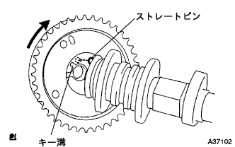
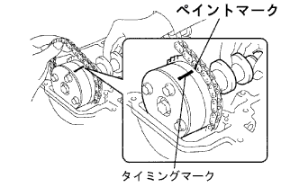
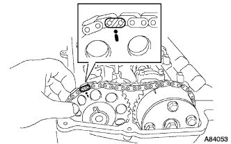
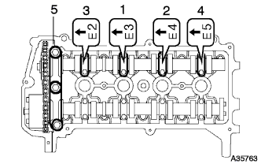
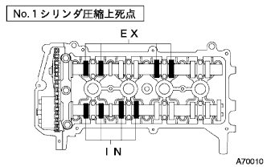
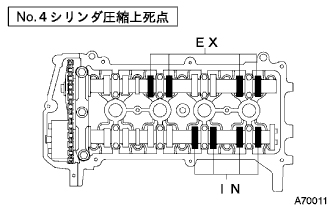
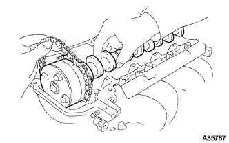
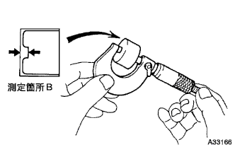
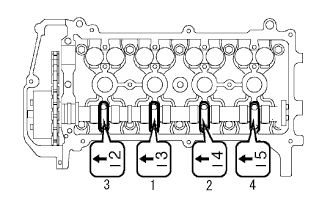
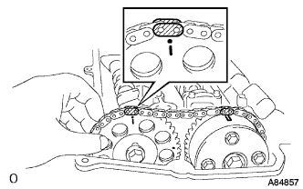

Camshaft installation |
| 1. Camshaft timing gear assessed |
|  |
The key groove of the camshaft timing gear assy is shifted to the straight pin of the camshaft as shown in the figure.
Press the camshaft timing gear ASSY lightly to the direction of the arrow in the figure (left rotation), and press further when the key structure and the straight pin match.
Confirm that there is no gap between the camshaft timing gear Ass and the flange part of the camshaft.
Tighten the flange bolt while being careful not to rotate the camshaft timing gear.
After tightening, confirm that the camshaft timing gear ASSY rotates in the late angle direction (right rotation) and moves, and confirms that the camshaft timing gear Assicy locks at the movable end.
| 2. Installation of camshaft |
|  |
Apply engine oil to the camshaft cam and cylinder head journal.
Hold the chain by hand as shown in the figure, and attach a camshaft and camshaft timing gear Ass, so that the paint mark of the chain matches the timing mark of the camshaft timing gear Assy.
Check the front mark and numbers of the bearing cap No.2, divide them into several times in the order of the figure and tighten evenly.
| 3. Camshaft No.2 Installation |
|  |
Hold the chain by hand as shown in the figure, and attach the camshaft No.2 and camshaft timing gear so that the paint mark of the chain matches the timing mark of the camshaft timing gear.
Combine the knockpin of the camshaft No.2 and the pin groove of the camshaft timing gear.
 |
Temporary with flange bolt.
|  |
Check the front mark and numbers of the bearing cap No.1, No.2, and then tighten evenly into the detours that match in the order of the figure.
 |
The hexagon for service No.2 is held with a monkey wrench and tighten the flange bolt.
Remove a φ3mm stick or a hexagonal wrench from the chain tensioner.
 |
Rotate the crankshaft Dampa correctly and match the cut of the crankshaft dampa to the 0 ° mark.
Confirm that each match mark matches.
Applied 1324 is applied to the 2-3 screws from the bolt tip of the cheynes cover service hole square plug.
 |
Use a socket hexagon wrench 8 to attach a chien cover service hall scriey plug.
| 4. Valve clearance inspection |
|
No.1 Cylinder compressed death point set
Rotate the crankshaft damper correctly and match the timing mark (notch) to the chain cover 0 °.
Confirm that there is a timing mark of Kamshi Sayftting Timing Gear at the position in the figure.
|  |
Inspect the valve clearance of the location in the figure.
Use a chickness gauge to measure clearance between Valbrifta and Kamshijaft.
The crankshaft is turned one rotation in the positive rotation direction, and the No.4 cylinder is compressed and a death point.
|  |
Inspect the valve clearance at the point in the figure.
Use a chickness gauge to measure clearance between Valbrifta and Kamshijaft.
| 5. Valve clearance adjustment |
 |
|
No.1 Cylinder compressed death point set
Rotate the crankshaft damper correctly and adjust the timing mark (notch) to the chain cover 0 °.
At this time, confirm that the timing mark of the Kamshiyaft timing gear is in the figure in the figure.
|
Use the socket hexagon wrench 8 to remove the chien cover service hole scriey plug.
 |
Use a flathead screwdriver to hold the tensioner stopplate from the chain tensioner service hall.
 |
Use a monkey wrench from the state where the stopper plate of the chain tensioner is raised, the hexagonal part for the Camshaft No.2 is slightly turned to the right to make the chain tensioner plunger is pressed.
 |
Hold the monkey wrench and remove the flather from the plunger in the back.
 |
The stopper plate of the chain tensioner is poured down and insert a φ3mm rod or a hexagonal wrench into the hole of the stopper plate from the locked state.
Fix it with a tape so that the φ3mm stick or a hexagonal wrench does not fall off.
|
The hexagon for service No.2 of Kamshijaft is retained with a monkey wrench to loosen the camshaft timing gear mounting bolt.
 |
In the order of the figure, remove the No. 1 and No.2 camshiyard bearing Keyatsu.
|
With the Kamushiyaft No.2 a little floating, remove the flange bolt and remove the camshaft No.2 and camshaft timing gear.
 |
Remove the No.2 camshiyard bearing kiyatsu in the order of the figure.
|  |
Hold the chain by hand and remove the Kamshijaft.
 |
Hang the chain with a rope and wire.
Remove the bulburifta.
|  |
Use a micrometer to measure the thickness of the removed Valbrifta.
Calculate the thickness of the valve bulft so that the valve clearance is the reference value.
| a | Selected Valbrifta |
| B | The thickness of the barbrillifta that was removed |
| C | Measured valve clearance |
Select Valbrifta.
Attach the selected Valbrifta.
Apply engine oil to the camshaft part and the cylinder honeydo journal.
The chain is kept by hand as shown in the figure, and the chain paint mark is attached to the camshaft timing gear ASSY as the timing mark of the camshaft timing gear ASSY.
|  |
Check the front mark and numbers of the camshaft bearing Keyatsu No.2, and then tighten evenly in the order of the figure.
|  |
The chain is kept by hand as shown in the figure, and the chain paint mark is attached to the No.2 and camshaft timing gear so that the paint mark on the chain matches the timing mark of the camshawny timing.
Combine the knockpin of Kamshijaft No.2 and the pin groove of the kamshyehaft timing gear.
|
Temporarily attach the flange bolt.
Check the front marks and numbers of the camshi gear bearing Keyatsu No.1, No.2, and then tighten evenly several times in the order of the figure.
|
The hexagonal part for service No.2 is held with a monkey wrench and tighten the flange bolt.
Draw a hexagonal wrench from the chientensyona.
|
Rotate the crankshaft pulley correctly and adjust the cutout of the crankshaft pulley to the 0 ° mark.
Confirm that each match mark matches.
Applied 1324 is applied to the 2-3 screws from the bolt tip of the cheynes cover service hole square plug.
|
Use a socket hexagon wrench 8 to attach a chien cover service hall scriey plug.
| 6. Cylinder head cover SUB-ASSY installation |
 |
Apply a sticker packing black to the position in the figure and attach a cylinder head cover.
 |
Attach a cylinder head cover with nine bolts and two nuts.
Close the bolt and nuts in several times in the order of the figure.
| 7. Ignition coil No.1 installation |
Attach the ignition coil with bolts.
Connect the connector.
| 8. Attach a ventilation hose |
Attach a ventilation hose with a ventilation hose clip.
| 9. Ventilation hose No.2 installation |
Attach the ventilation hose No.2 with the ventilation hose clip No.2.
| 10. Cylinder head cover No.2 installation |
 |
After tightening the nut A2, attach the nut B2 No.2 cylinder head cover No.2.
| 11. Engine oil leak inspection |
| 12. Engine Anda cover RH installation |
With two screws and two bolts, attach the engine undercover RH.
Tighten the nut.